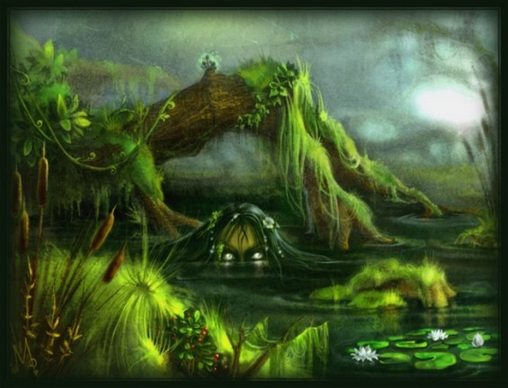

Духи воды в «Сверхъестественном»

Потусторонний, сверхъестественный мир полон всякой нечисти, обитающей в старинных домах, подвальных помещениях, больничных учреждениях, кладбищах – где угодно. Однако место обитания характеризует и самого призрака – его повадки, пристрастия, наклонности, образ существования. Так или иначе, большая часть призраков живут на суше, тем интереснее водный мир с его обитателями. В мифах и легендах практически каждой народности существуют представители водных духов, которые представляют немалую опасность для людей. Попасть под влияние такого сверхъестественного существа все равно, что в воду кануть.
В легендах славянской мифологии и даже сказках часто встречается некий Водяной. Он завсегдатай озер и рек, который представляется в виде обрюзглого, пучеглазого стариком с длинной боротой и телом, покрытым чешуей, водорослями и илом. Соответственно и с рыбьим хвостом и перепончатыми лапами. Впрочем, образы Водяного разнообразны. Некоторые истории рисуют его с рогом на голове, с копытами или коровьим хвостом. Водяной умеет оборачиваться крупной рыбой, зверем, птицей и других живым существом. Водяные – нередкие обитатели водоворотов, затонувших кораблей, омутов и водяных мельниц. А те моряки, которые канули в воду вместе с судном, являются слугами Водяного духа, его рабами. Особую опасность Водяной представляет при новолунии или в канун Ивана Купала, Троицкой субботы, в Ильин день.
А вот от праздника Крещения до самой Пасхи Водяной не имеет никакой власти над людьми.
На севере России Водяного считают настоящим царем водной стихии. Он изображается с трезубцем и поднимается к небесам в виде черного облака, чтобы создавать новые реки и озера.
Любимой рыбой Водяного считается сом. Водный дух любит прокатиться на этой рыбе, а еще сом якобы приносит Водяному утопленников, за что водяной царь поощряет «усатого».
Зато славянский представитель водного мира является покровителем рыбаков, а они в свою очередь, чтобы задобрить речной дух должны отдавать ему первую пойманную рыбу. Водяные также любят табак, масло, а также Русалок – еще одни прекрасные и чарующие представительницы водного мира славян. Водяной может или жениться на них, или брать к себе в наложницы.
История возникновения русалок весьма горестна. Обычно плавающие духи женского пола – это утопленницы или те женщины, которых убивали. Мифология также рассказывает о Русалках-детях, которые по легенде якобы были утоплены своими матерями.
Женщины-русалки имеют прекрасные голоса. А своим пением они способны заманивать в воду мужчин и обращать в своих возлюбленных. Поговаривают, что Русалка может исчезнуть, если за ее гибель отомстили. А также если срезать ее длинные, красивые волосы, с коими она так часто изображается на картинах и в книгах, и высушить их.
Спасение ребенка-русалки – в святой воде и крещение в ней.
А вот в немецкой мифологии не менее популярны некие Никсы. Они чем-то похожи на Водяного и Русалку. То есть Никс предстает, как в женском обличие, так и в мужском. Последние имеют прекрасный облик и представляют опасность для юных незамужних девиц и детей. Достаточно опасными периодами для людей являются дни летнего и зимнего солнцестояния. В отличие от Русалок Никсы не поют. Они заманивают к себе красивой и мелодичной музыкой.
Подобно баньши германские Никсы являются предвестниками смерти. И если вдруг послышался вой или крик из воды, точно нужно ждать беды, а точнее нового утопленника. Аналогично пристрастию Водяного Никс любит табак и водку. А если уж вам приспичило познакомиться с водяным духом, тогда можно пролить кровь в воду или принеся в жертву животное черного цвета. И в том и в другом случае Никс должен показаться вам, но и утащить тоже может…
Иногда в легендах Никс предстает в виде коня. В этом случае он заманивает к воде своих всадников и топит их. Такой же дух имеется и в кельтско-шотландской мифологии. Некий Келпи. Они выходят из тумана вблизи водоема. А тот, кто попытается его оседлать, непременно очутится в воде и, скорее всего, будет утопленным.
Индийцы в своем репертуаре имеют водяного духа Маннегиши. Эти духи некие шутники, вот только их игры и подшучивания чаще всего заканчивают гибелью людей.
Водяные духи Китая названы Найшигу. Согласно поверью, Найшигу не достойны реинкарнации, то есть их душа не возрождается и больше не живет. Озлобленные такой участью, водные духи Китая стараются как можно больше жертв заманить в воду.
Не исключение и мифология Японии, где присутствует бесчисленное множество водяных духов с водными волосами. Свидетельством этому являются даже современные фильмы-ужасов. Известный «Звонок», например, где утопленная в колодце девочка выходила потом в поисках новой смерти.
В общем-то практически все водяные духи – это бывшие смертные, которых настигла смерть в реках и озерах, в любом источнике воды. Духи являются призраками отмщения и не находят себе покоя, пока не затащат под воду достаточное количество жертв или их гибель не будет отомщена.
В сериале «Сверхъестественное» водный дух показался уже в третьей серии первого сезона, когда братьев Винчестеров занесло в Висконсин. Однако здешний «плавец» не принадлежал ни к одной категории мифологических представителей нечести. Появившийся призрак-убийца мстил и также, как и персонажи древних легенд, желал быть отомщенным.
Водный дух был мальчиком-подростком, который по роковому происшествию был случайно убит еще 35 лет назад своими сверстниками. Захлебнувшись в местном озере, мальчик так и остался там жить, только уже в образе страшного мстителя. Спустя долгие годы он начал затаскивать и топить в этом же озере всех близких и самых родных людей, тех самых убийц — Джейка Девинса и Билла Карлтона. Один из когдатошних подростков – Карлтон теряет в третьей серии уже взрослых сына и дочь. Причем дочь поглотило озеро, а сын утопился в собственной раковине. У второго убийцы — Девинса погиб зять и чуть не умер внук – милый мальчик, который от полученного шока начинает видеть будущее.
Именно благодаря ему Сэму и Дину удается раскрыть это запутанное и довольно старое дело. Дух успокаивается только после того, как забирает к себе на дно озера мужчин-убийц.
В последующих сериях водный дух встречался в шестой серии третьего сезона – «Рука славы», который убивал всех и без разбора. Характерной была лишь вода, от которой захлебывались жертвы и корабль призрак, на котором дух-убийца был моряком. Таким образом, некий водяной мстил за свою казнь, а отправиться в мир иной не мог из-за отрубленной рук, которая хранилась в местном музее.
В последующих сериях так или иначе «всплывают» образы водных духов и практически каждый из них пытался за что-то отомстить. Из чего можно сделать лишь один вывод – к водяным нужно относиться с осторожностью и уважением. Нужно быть внимательным во время купаний и, конечно, не причинять никому зла. Иначе можно стать очередным представителем водной нечисти…